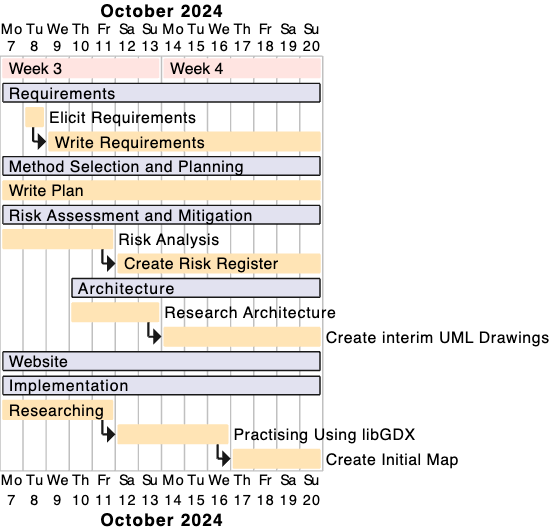

Week 1
Initially, the plan consisted in week 1 of all of us working on the team forming activities, creating our team logo and coming up with the name GeNext. We discussed briefly about what possible ideas we would use to complete our product brief however nothing was set in stone as the assessment document was not released.
Week 2
In week 2, we read the assessment as a group to decide what tasks people would be best at doing as well as what people most preferred to do. We also worked on interview questions for our stakeholder to elicit user requirements from them. Our intention was to do this on week 2 and start the write up for requirements. Furthermore, we discussed possible methodologies to use, concluding Agile- Scrum was the best.
Week 3
During week 3, we conducted interviews as we were unable to secure a meeting in time for week 2. The write up for requirements began towards the end of the week and a plan for each week was devised based on the tasks we needed to complete. Additionally, we started to analyse any potential risks that could occur. Research was also conducted to discuss how the architecture would be handled and an interim version of UML designs was started. On the implementation side, the website was made using HTML and CSS and research into what game engine and libraries was conducted. LibGDX was confirmed to be our game engine and the implementation team started to practise using this.
Week 4
In week 4, the architecture team finished creating the interim, UML designs and began working on creating behavioural diagrams. For requirements, they were still getting finished, often getting updated to fit the user’s needs. Additionally, throughout week 4 a risk register was made to combat any potential problems that may occur. The implementation team began to create the initial map mid-week and on Friday the discussion of what main classes should be included began.
Week 5
During week 5, the write up for requirements was completed and the majority of the risks within the project were identified. The architecture team finished behavioural diagrams allowing the implementation team to carry on with their progress. The implementation team created the classes used in the game and began working on camera movement.
Week 6
In week 6, the risk register was completed and so was the final UML diagram. The final plan write up was finished on Friday as well. On the implementation side, the UI system was designed and made. Finally, the documentation for the code was completed and all formatting of PDFs was done.